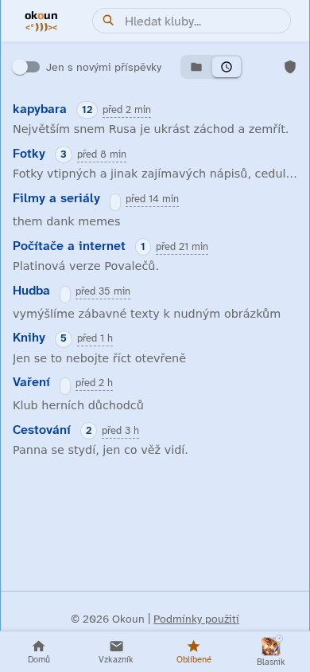
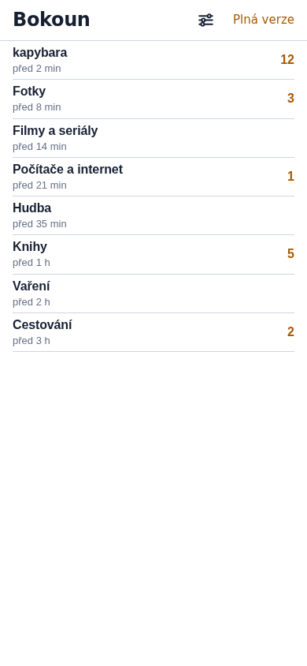
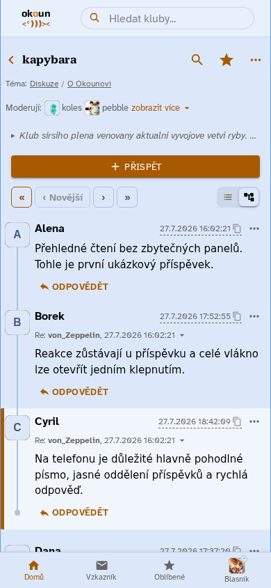
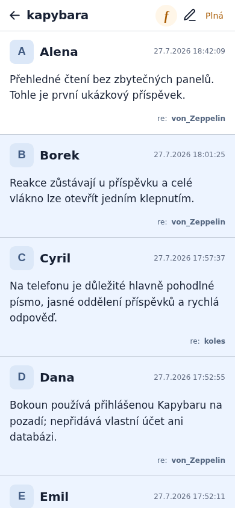
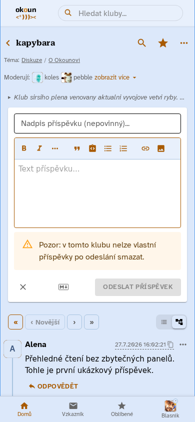
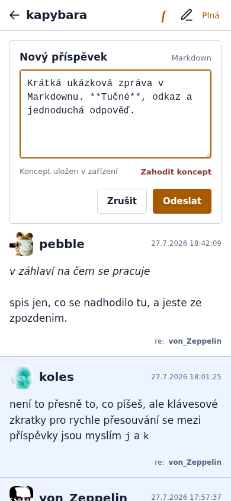
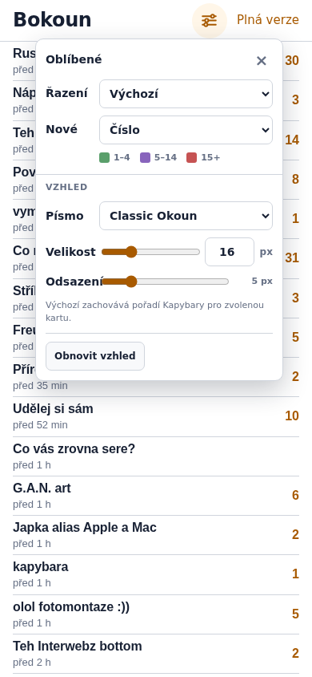
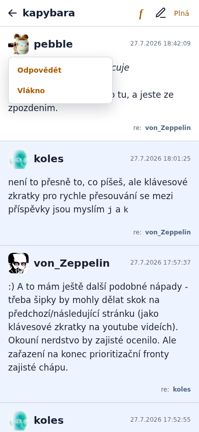
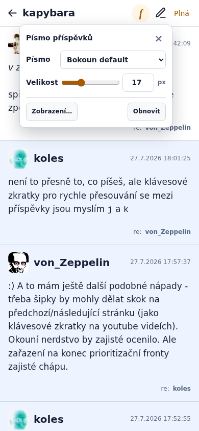
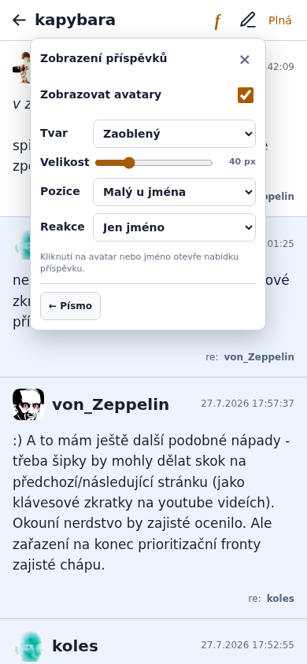

01 — Oblíbené
Rovnou ke klubům
Bokoun nechává jen název, poslední aktivitu a počet nových příspěvků. Bez spodní navigace a vedlejších panelů.

Kompletní aplikace
Vyhledávání, filtry, navigace a další kontext jsou stále po ruce.

Kompaktní pracovní seznam
Více klubů na jedné obrazovce, zvýrazněné novinky a návrat na přesné místo v seznamu.
02 — Čtení
Příspěvky mají znovu vlastní prostor
Klasicky čitelné oddělení příspěvků, minimum trvalých tlačítek a nekonečné načítání starších stránek.

Všechny funkce klubu
Témata, moderátoři, řazení, vlákna i příspěvkové akce jsou viditelné současně.

Text je hlavní obsah
Nové příspěvky zůstanou po celou návštěvu bílé, přečtené jsou modré a nic se nepřebarvuje časovačem.
03 — Psaní
Krátká odpověď bez velkého editoru
Bokoun ukazuje prosté Markdownové pole. Ověření a odeslání dál zajišťuje přihlášený nativní editor Kapybary.

Bohatý editor
Nadpis, formátování, odkazy, obrázky, seznamy a další nástroje.

Text, koncept, odeslat
Rozepsaný text se lokálně zachová i po omylovém opuštění stránky. Odpovědi se píší přímo uvnitř příspěvku.
04 — Ovládání
Funkce se ukážou, až když jsou potřeba
Čtyři malé nabídky drží hlavní obrazovku čistou, ale dovolují Bokoun přizpůsobit bez editace stylů.

Oblíbené
Řazení, podoba novinek, písmo a hustota seznamu.

Příspěvek
Klepnutí na jméno nebo avatar nabídne odpověď a celé vlákno.

Písmo
Rychlá volba rodiny písma a přesná ruční velikost.

Zobrazení
Avatary, jejich tvar, velikost a poloha i rozsah informace o reakci.